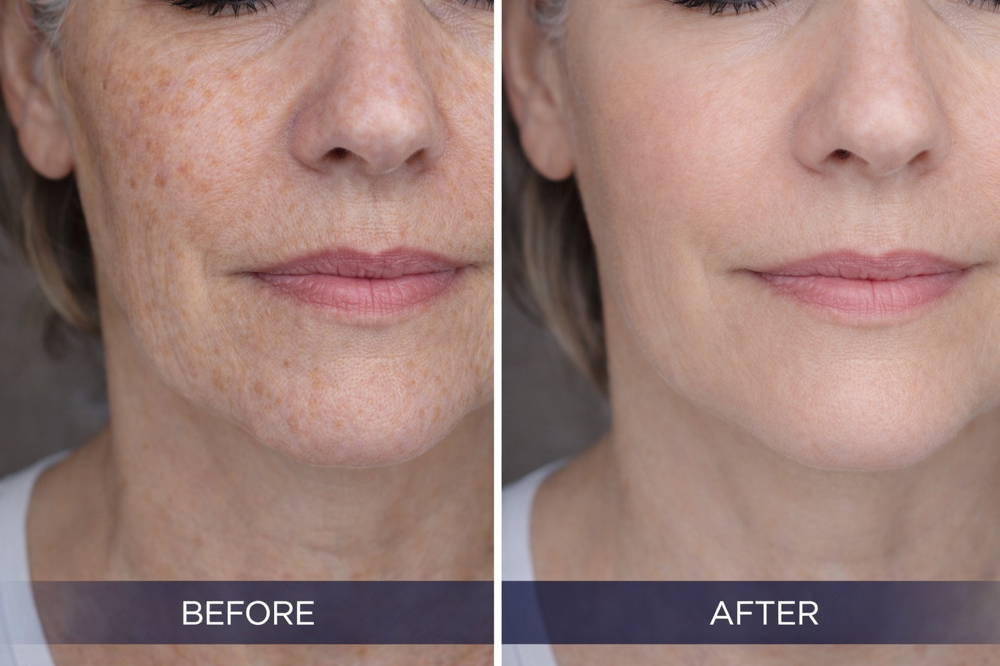
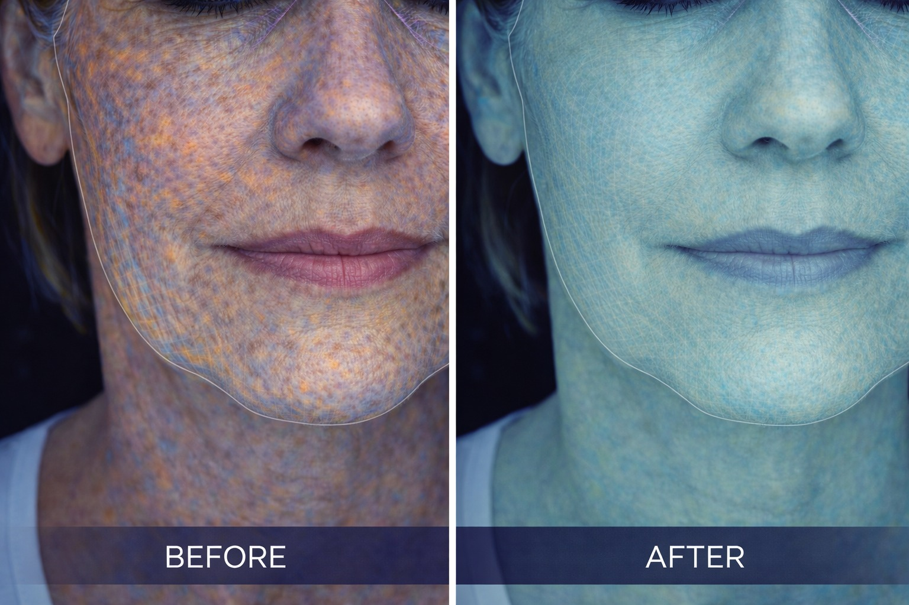

חידוש, ניקוי ושיפור איכות העור ברמה מבוקרת
פילינג הוא תהליך רפואי מבוקר שמטרתו לחדש את העור, לשפר את המרקם ולהסיר תאים פגומים משכבות העור העליונות. התהליך יוצר גירוי מבוקר, המעודד התחדשות תאים וייצור קולגן — ובכך מוביל לשיפור איכות העור לאורך זמן.

ברויאל-מד, פילינג אינו טיפול עצמאי — אלא חלק מפרוטוקול ביורג'נרציה מותאם אישית.
פילינג הוא תהליך שבו מסירים שכבות עור פגומות באופן מבוקר, באמצעות חומרים פעילים או טכנולוגיות מתקדמות. הפעולה יוצרת "פציעה מבוקרת", שמפעילה את מנגנוני ההתחדשות של הגוף — וגורמת ליצירת עור חדש, חלק ואחיד יותר.

פילינג רפואי מתקדם המבוסס על טכנולוגיה דו-שלבית (Bi-Phase), המשלבת חומצות, ויטמינים וחומצות אמינו. אינו גורם לקילוף אגרסיבי, מאפשר חידוש עור עמוק עם זמן החלמה מינימלי ומתאים לכל סוגי העור. מעודד חידוש תאים, משפר מרקם וגוון ומסייע בטיפול בפיגמנטציה ואקנה.
פילינג מכני מתקדם לניקוי עמוק של העור והחלקת פני השטח. ניקוי יסודי של שכבת העור העליונה, שיפור מרקם מיידי, הכנת העור לטיפולים עמוקים ושיפור חדירת חומרים פעילים.
פילינגים מבוססי חומצות (כגון AHA / BHA / TCA) הפועלים ברמות עומק שונות. מאפשרים טיפול בפיגמנטציה, שיפור קמטוטים, טיפול באקנה ושיפור אחידות העור.
התוצאה משתפרת לאורך זמן, במיוחד כאשר הטיפול מבוצע כחלק מסדרה.
לפני ביצוע פילינג, יש לבצע אבחון מקצועי לצורך התאמת סוג הטיפול, עומקו והשילוב בפרוטוקול הכולל.
תיאום תור טלפוני ללא עלות